| Student name | [Student Name] |
| Student ID | [Student ID] |
| Module | [Module code] – Mobile Application Development |
| Lecturer | [Lecturer Name] |
| Institution | [Institution] |
| Platform | React Native 0.88 · Expo SDK 58 · TypeScript · SQLite |
| Submission date | 19 November 2026 |
HealthMate is a cross-platform mobile application for iOS and Android that helps a health-conscious user record and review three daily activities: steps walked, calories burned and water intake. When the user opens the app they immediately see a summary of the current day (for example Today – 19 November 2026: 7,850 steps, 420 kcal, 2,000 ml) and can look back at previous days, search by date and manage their records.
The application was developed with React Native using the Expo framework and TypeScript. All data is stored locally on the device in an embedded SQLite database through the expo-sqlite module, which is the React Native equivalent of Flutter’s sqflite package named in the brief. No internet connection or remote server is needed, so the app works offline and the user’s health data never leaves the device.
health_records) with full Create, Read, Update and Delete (CRUD) support.The target user is an individual who wants a simple, private log of their activity rather than a complex fitness platform. The app therefore focuses on quick data entry, readable summaries and reliable storage. Integration with wearable sensors or cloud sync is outside the scope of this coursework, but the repository-based design (Section 3) allows such features to be added later without changing the screens.
| Item | Details |
|---|---|
| Language | TypeScript 6.0 (strict mode) |
| Framework | React Native 0.88.1 with Expo SDK 58, React 19.3 |
| Database | SQLite via expo-sqlite 58.0.18 |
| Tools | Node.js 26, npm 11, Visual Studio Code, Xcode iOS Simulator (iPhone 17 Pro / Pro Max), Expo Go, Git |
| Quality | Jest 30 + React Native Testing Library, ESLint 9 (eslint-config-expo), tsc --noEmit, expo-doctor |
| Requirement | Implementation | Screen |
|---|---|---|
| Add daily health entries | Form with a native date picker and numeric fields for steps, calories (kcal) and water (ml), plus an optional note. All input is validated before saving. | Add Record |
| View past records with dates | Records are grouped by day (“Today”, “Yesterday”, “Tue, 17 Nov 2026”), each group showing the daily totals and individual entries. | History |
| Update / delete records | Tapping an entry opens it in the Edit screen. Records can be deleted from the list (trash icon) or from the Edit screen; deletion always asks for confirmation. | History, Today, Edit |
| Search / filter by date | Free-text date search (2026-11-15, 15/11, Nov, Nov 2026), quick filters (All, Today, Last 7 days, This month), a specific-date picker and newest/oldest sorting. Filtering is performed in SQL. | History |
| Summary dashboard | Today’s total steps, calories and water, each with a progress bar towards the daily goal, plus the list of today’s entries. | Today |
| Dummy data for testing | 21 days of deterministic sample records are inserted on first launch; they can be restored at any time from Settings. | — |
HealthMate follows the Model–View–ViewModel (MVVM) pattern combined with a feature-based folder structure. MVVM was chosen because it separates what the user sees (View) from the screen logic (ViewModel) and the data/business rules (Model) (Gossman, 2005). In React, a ViewModel is naturally expressed as a custom hook: it holds the screen’s state, derives values and exposes actions, while the screen component only renders and forwards events. This keeps components small and makes the logic testable without rendering any UI.
Data access is isolated behind the Repository pattern (Fowler, 2002). Every SQL statement lives in a repository; no screen, hook or store writes SQL directly. The repository is defined as a TypeScript interface, so the global store can be tested with an in-memory fake and a remote API could replace SQLite in the future without changing any screen.
Code is organised by feature (health-records, goals, insights) rather than by file type, so everything related to one feature – model, data, state, view models and views – sits together. Shared, feature-independent code (database connection, theme, reusable components, utilities) lives in core. Routing is handled by Expo Router in src/app; route files are deliberately thin and only render a feature screen.
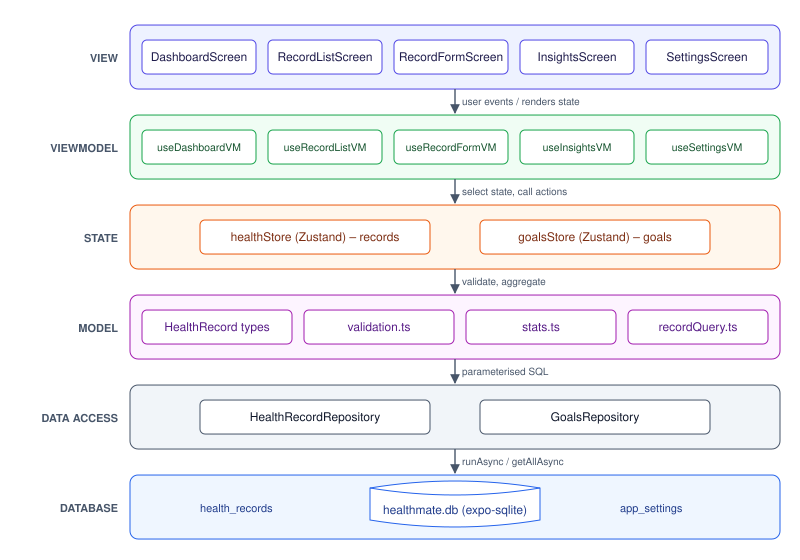
src/ ├── app/ Routes only (Expo Router) – thin wrappers around feature screens │ ├── _layout.tsx Root stack; start-up (open DB, run migrations, load stores) │ ├── (tabs)/ Bottom tabs: index (Today), records, insights, settings │ └── record/ new.tsx (modal form), [id].tsx (edit form) ├── core/ Shared, feature-independent code │ ├── database/ schema.ts, migrations.ts, seed.ts, database.ts (connection) │ ├── components/ Button, Card, Chip, FormField, DateField, ProgressBar, EmptyState… │ ├── hooks/ useAppBootstrap, useToday │ ├── theme/ Colours, spacing, typography, metric colour/icon mapping │ └── utils/ Date and number formatting ├── features/ │ ├── health-records/ │ │ ├── model/ Types, validation rules, statistics (pure functions) │ │ ├── data/ Repository (SQL CRUD) + SQL query builder │ │ ├── state/ Zustand store – single source of truth for records │ │ ├── viewmodels/ useDashboardViewModel, useRecordListViewModel, useRecordFormViewModel │ │ └── views/ DashboardScreen, RecordListScreen, RecordFormScreen + components │ ├── goals/ Goals repository, store, settings view model, SettingsScreen │ └── insights/ Insights view model and screen └── test-utils/ In-memory repository used by tests
| Layer | Location | Responsibility |
|---|---|---|
| View | features/*/views, core/components | Render UI and forward user events. No SQL and no business rules. Reusable components (e.g. FormField, DateField, MetricCard) give a consistent look. |
| ViewModel | features/*/viewmodels | Custom hooks holding screen state (form values, errors, filters, loading), derived data (today’s totals, grouped sections) and actions (submit, remove, pickDate). |
| State | features/*/state | Global Zustand stores shared by all screens. After every write the store re-reads the data, so every subscribed screen updates automatically. |
| Model | features/*/model | TypeScript types, validation rules and statistics written as pure functions – no React and no database, so they are trivial to unit-test. |
| Data access | features/*/data | Repositories that run parameterised SQL and map database rows (snake_case) to objects (camelCase). |
| Database | core/database | Opens the single shared connection, creates tables, applies migrations and inserts dummy data. |
| Routing | app/ | File-based navigation. Each file is a route that renders a feature screen. |
The app uses Zustand (v5) for global state. Zustand was selected over Redux Toolkit, Context API and MobX because it needs very little boilerplate (no reducers, actions or providers), supports asynchronous actions directly, and lets each component subscribe to exactly the slice of state it needs, which avoids unnecessary re-renders (Poimandres, 2026). It is the React Native counterpart to Provider/Riverpod mentioned in the brief.
There are two stores:
healthStore – holds every record (newest first), a load status, an error message and a revision counter, plus the actions load, addRecord, updateRecord, deleteRecord, resetToSampleData and clearAll.goalsStore – holds the daily goals and a saveGoals action.Short-lived screen state – for example the text typed in a form or the selected filter – is kept locally in the ViewModel with React’s useState, because no other screen needs it. This split keeps the global store small and predictable.
The store is created by a factory function that receives the repository as a parameter (dependency injection). In the app it receives the SQLite repository; in tests it receives an in-memory fake:
export function createHealthStore(repository: HealthRecordRepository) {
return createStore<HealthState>()((set, get) => {
/** Re-reads all records from SQLite after a write. */
const sync = async () => {
const records = await repository.findAll({ sort: 'desc' });
set((s) => ({ records, revision: s.revision + 1, status: 'ready', error: null }));
};
return {
status: 'idle', error: null, records: [], revision: 0,
async addRecord(input) {
const id = await repository.create(input);
await sync();
return id;
},
// … load, updateRecord, deleteRecord, resetToSampleData, clearAll
};
});
}
export const healthStore = createHealthStore(healthRecordRepository);
export function useHealthStore<T>(selector: (state: HealthState) => T): T {
return useStore(healthStore, selector);
}
features/health-records/state/healthStore.ts (abridged)Components read state with selectors such as useHealthStore((s) => s.records). When a record is added on the Add screen, the Dashboard and Insights screens re-render automatically because they are subscribed to records. The History screen runs its own filtered SQL query and simply re-runs it whenever revision changes, so the list is always in sync with the database.
The application uses a single SQLite database file, healthmate.db, stored in the app’s private sandbox on the device. It contains two tables:
health_records – one row per activity entry. It contains the five columns required by the brief (id, date, steps, calories, water) plus an optional note and two timestamps.app_settings – a small key/value table used to store the user’s daily goals as JSON.Dates are stored as ISO text (YYYY-MM-DD). This format sorts correctly as text, so range queries such as date BETWEEN ? AND ? and ORDER BY date work without date functions, and an index on date keeps history queries fast. The schema version is tracked with SQLite’s PRAGMA user_version, so future changes can be added as numbered migration steps (SQLite, 2026).
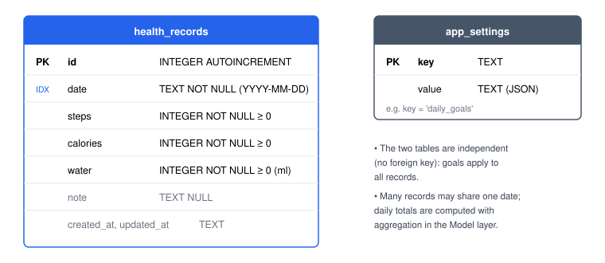
| Field | Type / constraint | Description |
|---|---|---|
id | INTEGER PRIMARY KEY AUTOINCREMENT | Unique identifier generated by SQLite; used to edit and delete a specific record. |
date | TEXT NOT NULL, indexed | Calendar date of the activity in YYYY-MM-DD format (local time). Several records may share a date. |
steps | INTEGER NOT NULL DEFAULT 0, CHECK ≥ 0 | Number of steps walked (0 – 100,000 enforced in the app). |
calories | INTEGER NOT NULL DEFAULT 0, CHECK ≥ 0 | Calories burned in kcal (0 – 10,000). |
water | INTEGER NOT NULL DEFAULT 0, CHECK ≥ 0 | Water intake in millilitres (0 – 10,000). |
note | TEXT NULL | Optional description, max. 200 characters (additional field). |
created_at | TEXT DEFAULT datetime('now') | When the row was inserted (additional field). |
updated_at | TEXT DEFAULT datetime('now') | Updated on every edit (additional field). |
key / value | TEXT PRIMARY KEY / TEXT | app_settings: setting name and JSON value, e.g. daily_goals → {"steps":10000,"calories":500,"water":2500}. |
The schema is defined once as SQL strings. CHECK constraints provide a second line of defence behind the form validation:
export const CREATE_HEALTH_RECORDS_TABLE = `
CREATE TABLE IF NOT EXISTS health_records (
id INTEGER PRIMARY KEY AUTOINCREMENT,
date TEXT NOT NULL,
steps INTEGER NOT NULL DEFAULT 0 CHECK (steps >= 0),
calories INTEGER NOT NULL DEFAULT 0 CHECK (calories >= 0),
water INTEGER NOT NULL DEFAULT 0 CHECK (water >= 0),
note TEXT,
created_at TEXT NOT NULL DEFAULT (datetime('now')),
updated_at TEXT NOT NULL DEFAULT (datetime('now'))
);
CREATE INDEX IF NOT EXISTS idx_health_records_date ON health_records (date);`;
core/database/schema.tsOn first launch the migration creates the tables and inserts the dummy records inside one transaction, so the database is never left half-initialised:
export async function migrateDatabase(db: SQLiteDatabase): Promise<void> {
await db.execAsync('PRAGMA journal_mode = WAL;');
const row = await db.getFirstAsync<{ user_version: number }>('PRAGMA user_version');
let currentVersion = row?.user_version ?? 0;
if (currentVersion >= DATABASE_VERSION) return;
if (currentVersion === 0) {
await db.withTransactionAsync(async () => {
await db.execAsync(CREATE_HEALTH_RECORDS_TABLE);
await db.execAsync(CREATE_APP_SETTINGS_TABLE);
await insertRecords(db, generateDummyRecords()); // 21 days of sample data
});
currentVersion = 1;
}
await db.execAsync(`PRAGMA user_version = ${DATABASE_VERSION}`);
}
core/database/migrations.tsgetDatabase() in core/database/database.ts calls openDatabaseAsync('healthmate.db') once and caches the promise, so the whole app shares one connection. Migrations run before the promise resolves.useAppBootstrap(), which awaits getDatabase() and then loads both stores. A splash screen is shown meanwhile; on failure the user sees the error and a “Try again” button.getAllAsync (many rows), getFirstAsync (one row), runAsync (INSERT/UPDATE/DELETE, returning lastInsertRowId and changes) and withTransactionAsync (atomic batches). Async calls run off the UI thread, so the interface stays responsive.?), never concatenated into SQL, which prevents SQL injection (OWASP Foundation, 2024).{ created_at: … } are mapped into typed HealthRecord objects (createdAt) before leaving the repository.const connection = getDatabase(); // Promise<SQLiteDatabase>, opened once const rows = await (await connection).getAllAsync<HealthRecordRow>( 'SELECT * FROM health_records WHERE date >= ? AND date <= ? ORDER BY date DESC, id DESC', ['2026-11-13', '2026-11-19'], ); return rows.map(mapRow); // → HealthRecord[]
All four operations follow the same path: View → ViewModel → Store → Repository → SQLite. The ViewModel validates input, the store performs the write and refreshes its data, and every screen subscribed to the store updates. Figure 3 shows this for the Create operation.
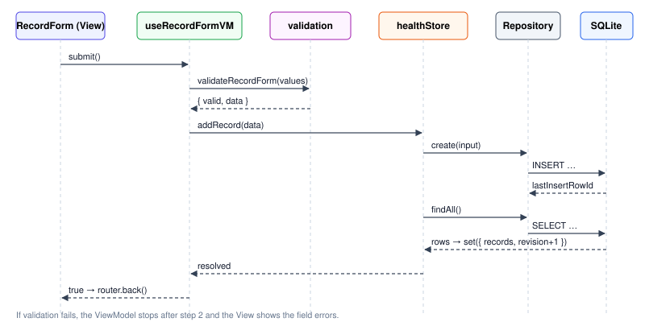
When the user taps Save record, the form ViewModel validates the raw text values. Only if validation passes does it call the store. Errors from the database are caught and shown in the form instead of crashing the app:
const submit = useCallback(async (): Promise<boolean> => {
setSubmitted(true);
const result = validateRecordForm(values);
setErrors(result.errors);
if (!result.valid) return false; // show field errors, do not save
setSaving(true);
try {
if (isEditing) await updateRecord(recordId, result.data);
else await addRecord(result.data);
return true; // the screen then calls router.back()
} catch (e) {
setErrors({ form: e instanceof Error ? e.message : 'Could not save the record.' });
return false;
} finally {
setSaving(false);
}
}, [values, isEditing, recordId, addRecord, updateRecord]);
useRecordFormViewModel.ts: one submit handles both Create and UpdateThe repository then inserts the row and returns the new id:
async create(input) {
const result = await (await db()).runAsync(
'INSERT INTO health_records (date, steps, calories, water, note) VALUES (?, ?, ?, ?, ?)',
[input.date, input.steps, input.calories, input.water, input.note ?? null],
);
return result.lastInsertRowId;
}
healthRecordRepository.ts – createValidation (model/validation.ts) treats blank fields as 0, rejects decimals, negatives and non-numeric text, enforces realistic maximums, rejects future dates, limits the note to 200 characters and requires at least one value greater than zero. After the first submit attempt, errors are re-checked on every keystroke so they disappear as soon as the user corrects them.
The Dashboard and Insights read from the store’s records array and compute totals with pure functions such as summaryForDate(). The History screen needs filtering, which is done in SQL. The ViewModel turns the UI state (quick filter, selected date, search text, sort order) into a RecordFilter object, and buildRecordQuery() converts it into a parameterised query:
export function buildRecordQuery(filter: RecordFilter = {}): SqlQuery {
const where: string[] = [];
const params: (string | number)[] = [];
if (filter.from) { where.push('date >= ?'); params.push(filter.from); }
if (filter.to) { where.push('date <= ?'); params.push(filter.to); }
if (filter.query) {
const q = parseDateQuery(filter.query); // "15/11" → substr(date, 6, 5) = '11-15'
if (q) { where.push(`(${q.sql})`); params.push(...q.params); }
}
const order = filter.sort === 'asc' ? 'ASC' : 'DESC';
const sql = 'SELECT * FROM health_records'
+ (where.length ? ` WHERE ${where.join(' AND ')}` : '')
+ ` ORDER BY date ${order}, id ${order}`;
return { sql, params };
}
data/recordQuery.ts – building the search/filter queryparseDateQuery() understands several date formats a user might type: ISO fragments (2026-11), day/month(/year) (15/11, 15/11/2026) and month names (Nov, November 2026). Typing is debounced by 250 ms so SQLite is not queried on every keystroke. The results are grouped into sections by date, each with its daily totals, and shown in a SectionList.
Tapping a record opens record/[id]. The ViewModel loads the row with findById(id), fills the form and, on save, calls updateRecord. If the row no longer exists, the repository throws an error, which the form shows to the user:
async update(id, input) {
const result = await (await db()).runAsync(
`UPDATE health_records
SET date = ?, steps = ?, calories = ?, water = ?, note = ?,
updated_at = datetime('now')
WHERE id = ?`,
[input.date, input.steps, input.calories, input.water, input.note ?? null, id],
);
if (result.changes === 0) throw new Error('Record not found. It may have been deleted.');
}
healthRecordRepository.ts – updateDeletion is available from the trash icon on every entry and from the Edit screen. A native confirmation dialog (Alert.alert) prevents accidental data loss. The store then removes the row and refreshes:
// View (RecordListScreen) – confirm first
Alert.alert('Delete entry?', 'This entry will be removed.', [
{ text: 'Cancel', style: 'cancel' },
{ text: 'Delete', style: 'destructive', onPress: () => vm.deleteRecord(record.id) },
]);
// Repository
async remove(id) {
await (await db()).runAsync('DELETE FROM health_records WHERE id = ?', [id]);
}
Only well-maintained libraries were used, and Expo-recommended modules were preferred so that every package is compatible with the same SDK version and runs in Expo Go without a custom native build. Versions were installed with npx expo install, which picks the version matching Expo SDK 58.
| Package (version) | Purpose | Why it was selected |
|---|---|---|
| expo 58.0.26 | App framework and build tooling | Provides a managed workflow, Expo Go for testing on real devices and simulators, and a consistent set of native modules without opening Xcode or Android Studio. |
| react-native 0.88.1, react 19.3 | Cross-platform UI | One TypeScript codebase produces native iOS and Android interfaces. |
| expo-sqlite 58.0.18 | Embedded SQLite database | The React Native equivalent of sqflite. It has a modern async API (runAsync, getAllAsync, transactions), works in Expo Go and is maintained by Expo. |
| zustand 5.1.0 | Global state management | Minimal boilerplate, selector-based subscriptions (fewer re-renders), easy async actions and a vanilla store that can be unit-tested without React. |
| expo-router 58.0.32 | Navigation | File-based routing (tabs, stack, modal) recommended by Expo; built on React Navigation; supports deep links such as healthmate://record/12. |
| react-native-screens, react-native-safe-area-context | Native screen containers, notch/safe areas | Required by Expo Router; give native performance and keep content clear of the notch and home indicator. |
| @react-native-community/datetimepicker 9.2.1 | Native date picker | Shows the platform’s own picker (Android dialog, iOS calendar), supports a maximum date to block future entries and is included in Expo Go. |
| @expo/vector-icons 15 (Ionicons) | Icons | Large, consistent icon set (footsteps, flame, water, calendar, trash) that matches both iOS and Android styles. |
| expo-font, expo-asset | Font/asset loading | Required by the icon fonts (see Issue 1 in Section 9). |
| expo-status-bar | Status bar styling | Keeps the status bar readable on the light background. |
| jest 30 + jest-expo 58 | Test runner | Standard JavaScript test runner; the jest-expo preset mocks native modules so tests run quickly in Node. |
| @testing-library/react-native 14.1 | Component/hook tests | Tests components and hooks the way a user interacts with them (by text, test IDs and press events). |
| typescript 6.0, eslint 9 + eslint-config-expo | Static checking | Strict typing catches errors at compile time; ESLint enforces React Hooks rules. |
Alternatives considered: react-native-sqlite-storage (needs a custom native build, older callback API), Redux Toolkit (more boilerplate than this project needs), React Navigation used directly (more manual configuration than Expo Router) and charting libraries (removed in favour of a simpler, text-based Insights screen).
Low-fidelity wireframes were drawn first to agree the layout and content of each screen before any styling was applied. They follow the order in which a user normally works: check today’s summary (W1), look back at history (W2), add or correct an entry (W3) and review trends (W4).
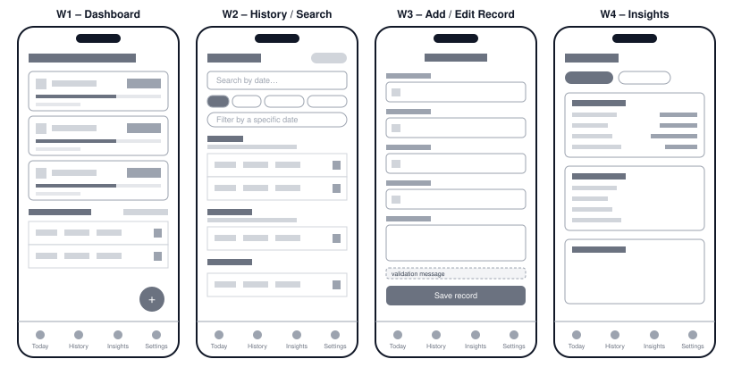
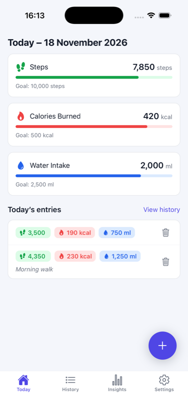
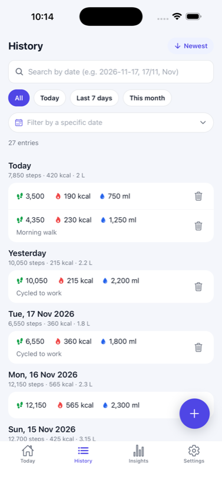
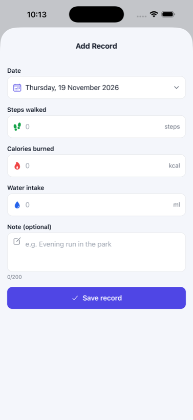
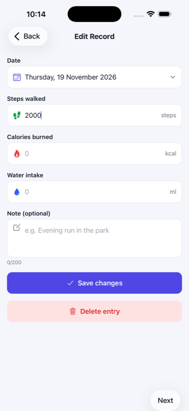
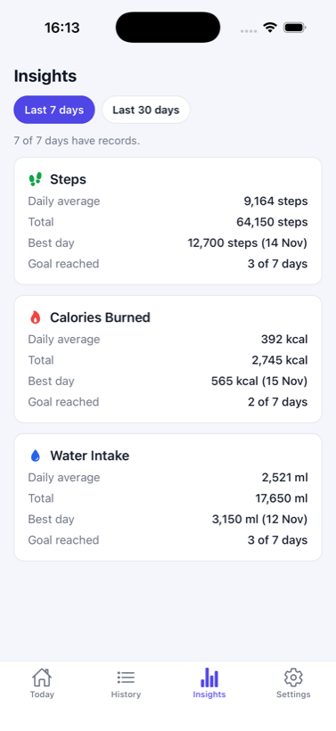
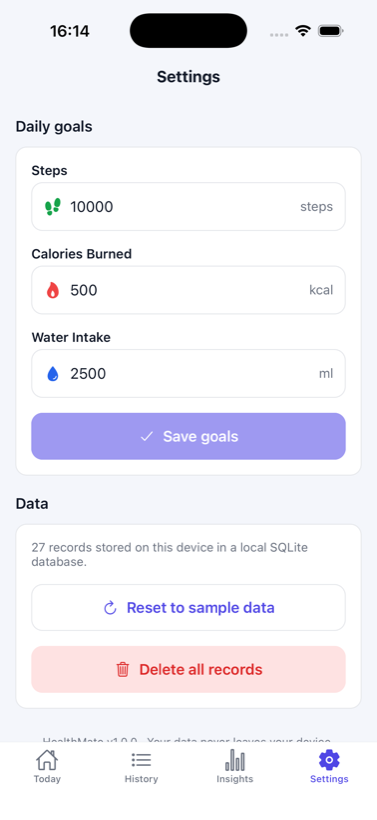
An earlier version included decorative elements (a coloured banner, streak counter, animated pop-ups and bar charts). Following feedback during development, these were removed in favour of a flat, minimal design: bordered cards, plain text and a single accent colour. This follows the heuristic of aesthetic and minimalist design – every element on screen should be relevant to the task (Nielsen, 2024).
| Colour | Use | Reason |
|---|---|---|
| Green #16A34A | Steps | Associated with movement and progress. |
| Red #EF4444 | Calories | Associated with energy/heat (flame), as suggested in the brief. |
| Blue #2563EB | Water | Universally associated with water, as suggested in the brief. |
| Indigo #4F46E5 | Primary actions, active tab, links | Neutral accent that does not clash with the three metric colours. |
| Red #DC2626 on pink | Errors, Delete buttons | Clearly signals danger and invalid input. |
| Light grey #F4F6FB / white | Background / cards | Soft contrast that makes white cards stand out without shadows. |
Colour is never the only signal: every metric also has an icon and a text label, and errors include a message, which supports users with colour-vision deficiency (W3C, 2023). The same colour/icon pair is used for each metric everywhere in the app (dashboard cards, list rows, form fields, insights).
A bottom tab bar gives one-tap access to the four main areas – the standard navigation pattern on both iOS and Android for 3–5 top-level destinations (Google, 2024; Apple, 2024). Adding a record opens as a modal because it is a short, self-contained task; editing is pushed onto the stack with a “Back” button because it starts from a specific item.
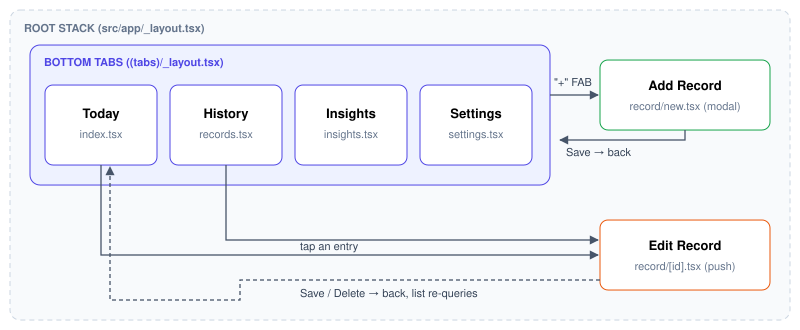
| Component / icon | Why it was used |
|---|---|
| Floating action button (+) | Material Design’s primary-action pattern; the most frequent task (adding a record) is always one tap away. |
| MetricCard with progress bar | Shows value, unit and goal progress at a glance without needing charts. |
| Ionicons footsteps, flame, water | Instantly recognisable symbols for each metric, reused consistently. |
| Chips (All / Today / Last 7 days / This month) | Common filters in one tap instead of typing. |
| Native date picker | Familiar platform control; future dates disabled to prevent invalid input. |
| FormField with inline error text | Errors appear next to the field that caused them, with a red border, and clear as soon as the value is fixed. |
| Confirmation alerts | Prevent accidental deletion (error prevention heuristic). |
| Empty-state messages | Explain why a list is empty and offer the next action (“Clear filters”). |
| Numeric keypad, “Next” key | Faster, error-free numeric entry on mobile. |
Touch targets are at least 44 pt high, which meets Apple’s Human Interface Guidelines, and text uses the system font for readability on both platforms.
Testing was carried out at two levels: manual functional testing on the iOS Simulator (iPhone 17 Pro Max) and automated tests with Jest. All ten manual test cases below were executed on 19 November 2026; screenshots are provided as evidence.
| ID | Test scenario | Input / steps | Expected result | Actual result | Status |
|---|---|---|---|---|---|
| TC-01 | Dashboard shows today’s summary from the database | Open the app on a fresh install | Tables created, sample data inserted; Today card shows 7,850 steps, 420 kcal, 2,000 ml | Dashboard showed “Today – 19 November 2026” with 7,850 steps, 420 kcal, 2,000 ml and two entries | Pass |
| TC-02 | Add record with all fields empty | Tap +, leave all values blank, tap Save record | Record not saved; message “Enter at least one activity value greater than zero.” | Error banner displayed; form stayed open; no record added | Pass |
| TC-03 | Invalid number in Steps | Steps = 12.5 | Inline error “Steps must be a whole number…”; field highlighted red | Error shown under the Steps field with red border while typing | Pass |
| TC-04 | Add a valid record (Create) | Steps = 1000, date = today, Save | Form closes; new entry listed; today’s steps increase by 1,000 | Returned to dashboard; steps 7,850 → 8,850; new entry “1,000 · 0 kcal · 0 ml” listed | Pass |
| TC-05 | Edit an existing record (Update) | Tap the 1,000 entry, change Steps to 2000, Save changes | Record updated; total steps increase by 1,000 | Edit screen pre-filled; after saving steps showed 9,850 and the entry 2,000 | Pass |
| TC-06 | Delete a record (Delete) | Tap trash icon on the 2,000 entry → Delete | Confirmation dialog; record removed; totals updated | “Delete entry?” dialog shown; entry removed; steps back to 7,850 | Pass |
| TC-07 | Search by date | History → search 15/11 | Only records for 15 November shown | “1 entry” – Sun, 15 Nov 2026 (12,700 steps) | Pass |
| TC-08 | Search with no matches | Search 15/11/2020 | Empty state with “No matching records” and Clear filters | “0 entries”, empty-state message and Clear filters button displayed | Pass |
| TC-09 | Quick filter by date range | Clear filters, tap “Last 7 days” | Only records from 13–19 Nov listed | Count changed from 27 to 8 entries; chip highlighted | Pass |
| TC-10 | Change daily goal | Settings → Steps goal 7000 → Save goals → Today | “Goals saved”; dashboard shows Goal: 7,000 and a full progress bar | Confirmation shown; dashboard showed “Goal: 7,000 steps” with full bar | Pass |
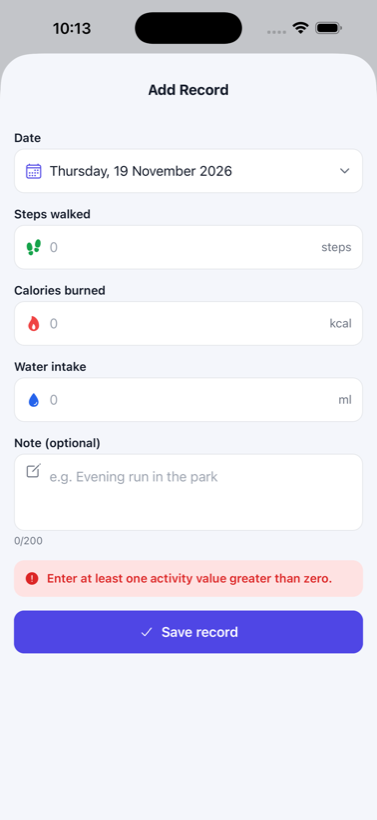
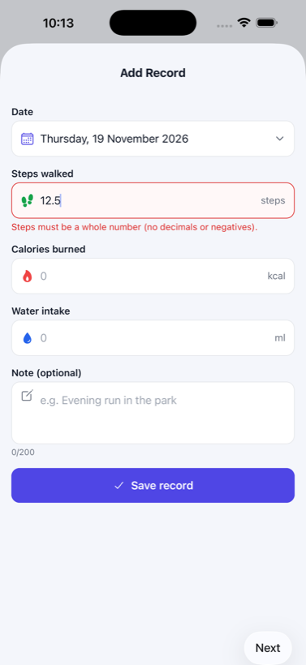
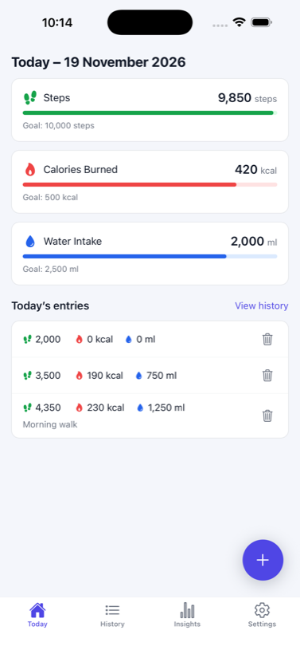
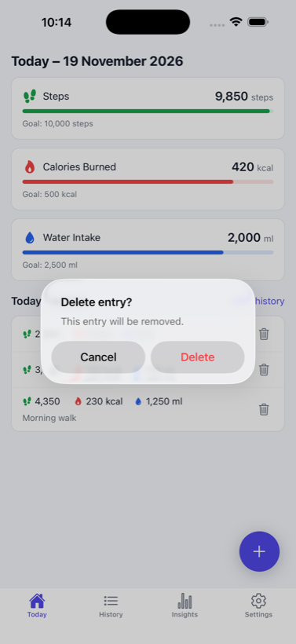
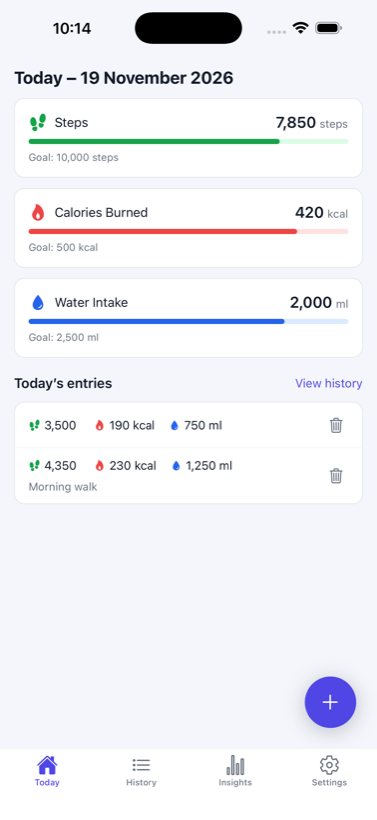
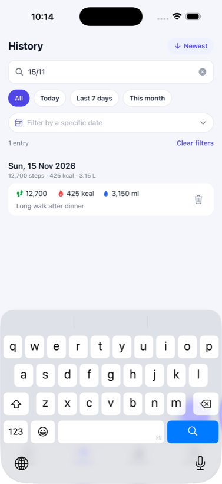
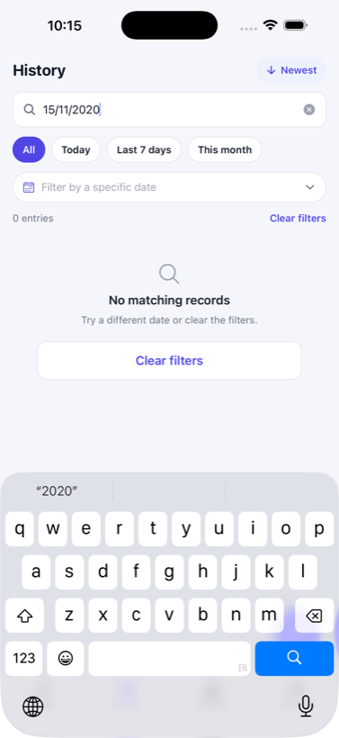
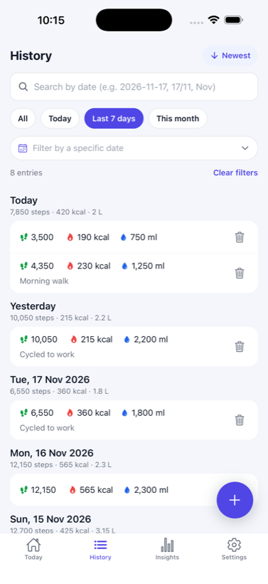
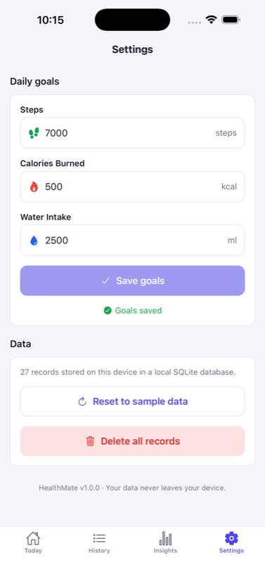
In addition to manual testing, 71 automated tests in 9 suites were written with Jest and React Native Testing Library. They run in about one second with npm test and all pass. The pure Model functions and the store were designed to be testable: the store receives a repository through its factory, so tests use an in-memory fake instead of a real database, and the SQLite repository is tested against a mocked connection that records every SQL statement.
| Test suite | Type | What is verified |
|---|---|---|
| core/utils/date.test.ts | Unit | ISO date validation (incl. leap years), adding days across months/years, relative labels, number and water formatting |
| core/database/database.test.ts | Unit | Dummy data covers 21 days, matches the brief’s example, is deterministic; migration creates the required schema and is skipped when up to date |
| model/validation.test.ts | Unit | Every form and goal validation rule (empty, decimals, negatives, limits, future date, note length) |
| model/stats.test.ts | Unit | Daily totals across multiple entries, zero-filled series, progress clamping, averages, best day, goal days |
| data/recordQuery.test.ts | Unit | Date search parsing, SQL building, bound parameters and SQL-injection safety |
| data/healthRecordRepository.test.ts | Unit (mock DB) | Row mapping and every CRUD statement with its parameters; “not found” on update; transactional reset |
| state/healthStore.test.ts | Integration | Create → update → delete through the store, revision counter, error state |
| viewmodels/viewModels.test.tsx | Integration | Filter building, grouping, form ViewModel: validation errors, saving, loading for edit, not-found |
| views/components.test.tsx | Component | MetricCard renders value/goal; RecordListItem renders values and fires press/delete events |
PASS src/features/health-records/views/__tests__/components.test.tsx PASS src/features/health-records/viewmodels/__tests__/viewModels.test.tsx PASS src/features/health-records/state/__tests__/healthStore.test.ts … Test Suites: 9 passed, 9 total Tests: 71 passed, 71 total
npm testStatic checks were also run before each milestone: npx tsc --noEmit (no type errors), npx eslint . (no lint errors) and npx expo-doctor (20/20 checks passed).
The following significant problems were encountered during development. Each was diagnosed from the error output and fixed at its root cause.
| # | Problem | Cause | Fix |
|---|---|---|---|
| 1 | Component tests failed with Cannot find module 'expo-asset' from 'expo-font/build/FontLoader.js'. | @expo/vector-icons depends on expo-font, which needs expo-asset; neither was installed. The icons would also have failed at run time. | Installed both with npx expo install expo-asset expo-font so SDK-compatible versions were chosen. All suites then passed. |
| 2 | npm install zustand failed with ERESOLVE … react-dom@19.3.1 … Found: react@19.3.0. | A transitive dependency pulled in a newer react-dom than the React version pinned by Expo. | Installed react-dom through npx expo install (matching React 19.3.0), after which zustand installed cleanly. |
| 3 | TypeScript error TS2322 on forwardRef in FormField, and Property 'focus' does not exist on the input ref. | React 19 passes ref as a normal prop, and React Native 0.88 types the input instance as TextInputInstance, not TextInput. | Removed forwardRef, accepted ref?: Ref<TextInputInstance> as a prop and typed refs with useRef<TextInputInstance>. |
| 4 | ESLint errors react-hooks/set-state-in-effect (“Calling setState synchronously within an effect can trigger cascading renders”). | The History ViewModel set loading=true at the start of an effect; start-up and Settings also set state synchronously in effects. | Refactored: loading is now derived by comparing the current query key with the key of the last result; start-up uses an attempt counter; Settings keeps an unsaved “draft” instead of copying store values in an effect. |
| 5 | tsc reported Cannot find name 'describe' / 'expect' in every test file although Jest ran correctly. | TypeScript 6 no longer includes all @types packages automatically. | Added "types": ["jest"] to tsconfig.json. |
| 6 | The dashboard was empty on the day after the app was first installed. | Dummy records are generated relative to the date of first launch, so “today” moved past the seeded data. | Kept the realistic behaviour, and added a “Reset to sample data” action in Settings that regenerates the 21 days ending on the current date (one transaction). |
| 7 | The Edit screen’s back button was labelled “(tabs)”. | iOS uses the previous route’s name, and the tab group is named (tabs). | Set headerBackTitle: 'Back' in the root stack options. |
| 8 | “Failed to compile – Syntax Error” red screen while simplifying the UI. | An automated text edit to EmptyState.tsx removed the wrong lines, leaving an invalid style object. | Rewrote the component and adopted a rule of running tsc and ESLint after every change before reloading the app. |
| 9 | npx expo lint stopped with “requires ESLint version 8.57.0 or greater” although ESLint 9 was installed. | Version-detection problem in the Expo CLI wrapper. | Ran ESLint directly with npx eslint ., using the generated eslint.config.js. |
| 10 | TypeScript error TS2783 “'key' is specified more than once” on the dashboard metric cards. | The metric objects (which contain a key field) were spread into <MetricCard {...m} /> after an explicit key prop. | Passed the card’s props explicitly instead of spreading the whole object. |
Git was used for version control, with the project hosted on GitHub.
| Item | Details |
|---|---|
| Repository link | https://github.com/dulangidel/HealthMate |
| Branch | main – every commit leaves the app building, type-checking and passing its tests |
| Branching strategy | As a single-developer project, work was committed directly to main in small, self-contained steps, each adding one layer or feature on top of the last. Feature branches would be used if more developers joined. |
| Commit convention | Conventional Commits: feat:, test:, docs:, chore: with an optional scope, e.g. feat(db): – one logical change per commit |
| Ignored files | node_modules/, .expo/, dist/, local .env*.local files and signing keys (*.jks, *.p12, *.key). The ios/ and android/ folders are never committed because Expo generates them at build time. |
The full commit history of main (output of git log --reverse, oldest first):
| Commit | Date | Message |
|---|---|---|
6f84fdd | 17 Nov 2026, 21:08 | chore: create Expo project and configure Router, TypeScript, Jest and ESLint |
8d19a21 | 17 Nov 2026, 21:16 | feat(core): add theme, date/number utils and shared UI components |
02b7e76 | 17 Nov 2026, 21:24 | feat(db): add SQLite schema, migrations and dummy data |
ffa0ddf | 17 Nov 2026, 21:35 | feat(data): add record model, validation, repositories and Zustand stores |
a366baa | 18 Nov 2026, 16:02 | feat(dashboard): add navigation layout and today's summary screen |
0e0c93f | 18 Nov 2026, 16:12 | feat(records): add/edit/delete form and history list with date search |
a3af2d7 | 18 Nov 2026, 16:21 | feat(insights,settings): add insights summary and daily goals settings |
656e3ee | 18 Nov 2026, 16:30 | test: add unit, integration and component tests |
| (latest) | 19 Nov 2026, 10:28 | docs: add README, screenshots and technical report |
The commits follow the architecture from the bottom up: project setup first, then shared core code, the SQLite layer, the model/repository/state layer, each screen in turn, the tests and finally the documentation. Small commits like these make each change easy to review, show exactly when a problem was introduced and allow a quick return to a working version if needed.
HealthMate meets all the core requirements of the coursework. Users can add, view, update and delete daily health records; search and filter them by date; and see a clear summary of the current day. Data is stored in an embedded SQLite database with the required health_records table, accessed through parameterised queries, and seeded with dummy records for testing.
The application is structured with MVVM and feature-based folders, uses Zustand for state management and isolates all SQL in repositories. This separation proved valuable in practice: the screens could be completely redesigned (Section 7.3) without changing any business logic or database code, and 71 automated tests could check validation, queries and CRUD behaviour without a device. Ten manual test cases on the iOS Simulator confirmed the end-to-end behaviour.
Overall, the project demonstrated how mobile UI development, state management, local databases, validation, testing and version control fit together in a maintainable cross-platform application.
Apple Inc. (2024) Human Interface Guidelines: Tab bars. Available at: https://developer.apple.com/design/human-interface-guidelines/tab-bars (Accessed: 19 November 2026).
Expo (2026a) Expo documentation (SDK 58). Available at: https://docs.expo.dev/versions/v58.0.0/ (Accessed: 19 November 2026).
Expo (2026b) SQLite – expo-sqlite. Available at: https://docs.expo.dev/versions/latest/sdk/sqlite/ (Accessed: 19 November 2026).
Expo (2026c) Introduction to Expo Router. Available at: https://docs.expo.dev/router/introduction/ (Accessed: 19 November 2026).
Fowler, M. (2002) Patterns of Enterprise Application Architecture. Boston: Addison-Wesley.
Gossman, J. (2005) Introduction to Model/View/ViewModel pattern for building WPF apps. Available at: https://learn.microsoft.com/en-us/archive/blogs/johngossman/introduction-to-modelviewviewmodel-pattern-for-building-wpf-apps (Accessed: 19 November 2026).
Google (2024) Material Design 3: Navigation bar. Available at: https://m3.material.io/components/navigation-bar/overview (Accessed: 19 November 2026).
Meta Platforms (2026) React Native documentation. Available at: https://reactnative.dev/docs/getting-started (Accessed: 19 November 2026).
Meta Platforms (2026) Jest documentation. Available at: https://jestjs.io/docs/getting-started (Accessed: 19 November 2026).
Nielsen, J. (2024) 10 Usability Heuristics for User Interface Design. Nielsen Norman Group. Available at: https://www.nngroup.com/articles/ten-usability-heuristics/ (Accessed: 19 November 2026).
OWASP Foundation (2024) SQL Injection Prevention Cheat Sheet. Available at: https://cheatsheetseries.owasp.org/cheatsheets/SQL_Injection_Prevention_Cheat_Sheet.html (Accessed: 19 November 2026).
Poimandres (2026) Zustand: bear necessities for state management in React. Available at: https://github.com/pmndrs/zustand (Accessed: 19 November 2026).
SQLite (2026) SQLite documentation: PRAGMA user_version. Available at: https://www.sqlite.org/pragma.html#pragma_user_version (Accessed: 19 November 2026).
Testing Library (2026) React Native Testing Library. Available at: https://callstack.github.io/react-native-testing-library/ (Accessed: 19 November 2026).
W3C (2023) Web Content Accessibility Guidelines (WCAG) 2.2 – Use of Color (1.4.1). Available at: https://www.w3.org/TR/WCAG22/ (Accessed: 19 November 2026).